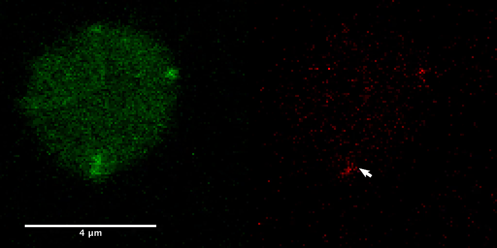
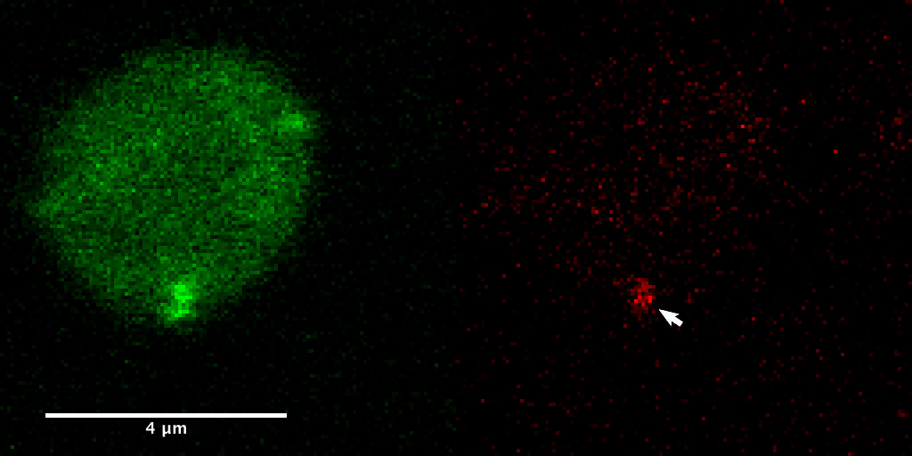
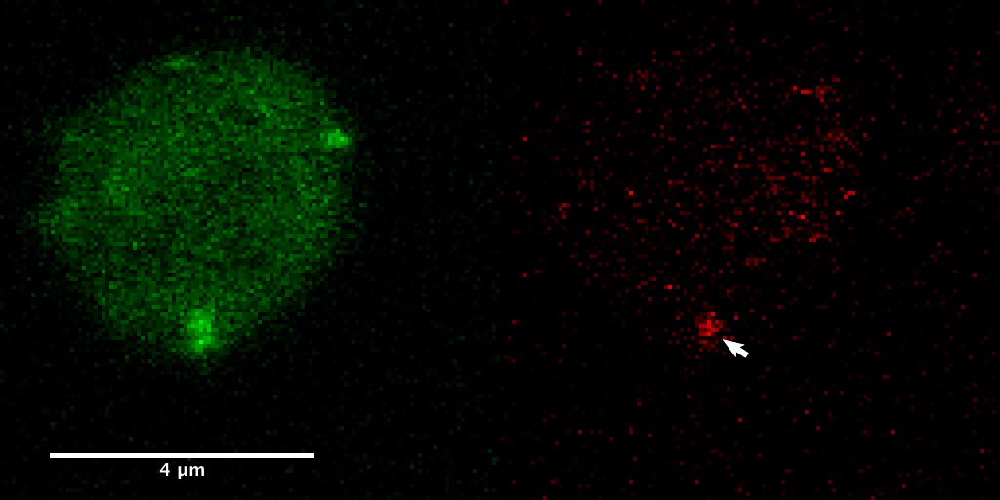
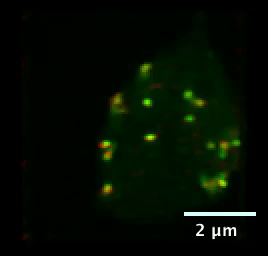

Chapter 24 · observed fluorescence, with two different meanings of motion
Vesicles at retinal ribbon synapses
Fluorescent puncta are optical signals, not resolved vesicle membranes. These source movies provide an observed reference alongside the chapter’s electrical models; neither supplies the missing complete molecular fusion mechanism.
1 · A time series from an isolated zebrafish retinal neuron
Video 1 shows a bipolar-cell synaptic terminal. Green marks ribbon-binding peptide; red marks photoactivated Vglut1-paRFP. The original arrow identifies a persistent punctum; transient red streaks arise during raster scanning. The source retains its 4 µm bar.


The source reports 3.77 s between images and about 245 s overall. The delivered file has 66 frames at 7 fps: 9.429 file seconds. At 1× playback, one file second spans approximately 26.39 acquisition seconds. Controls show file time; the 0.5 s steps are not individual acquisition frames.




The time samples do not resolve millisecond fusion events or a postsynaptic response. No displacement, trajectory or fusion probability is measured here.
2 · Rotation of a reconstructed optical stack
Video 2 rotates a confocal z-stack of a living zebrafish bipolar terminal. Red vesicle-associated signals cluster near green ribbon-associated signals. The original 2 µm bar remains visible.
